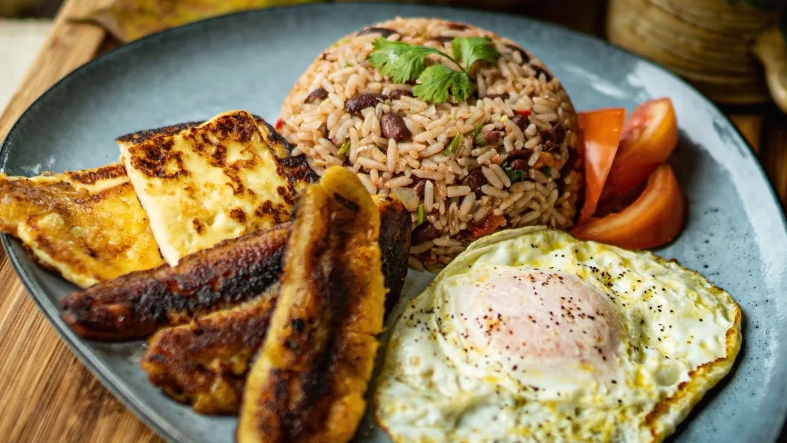
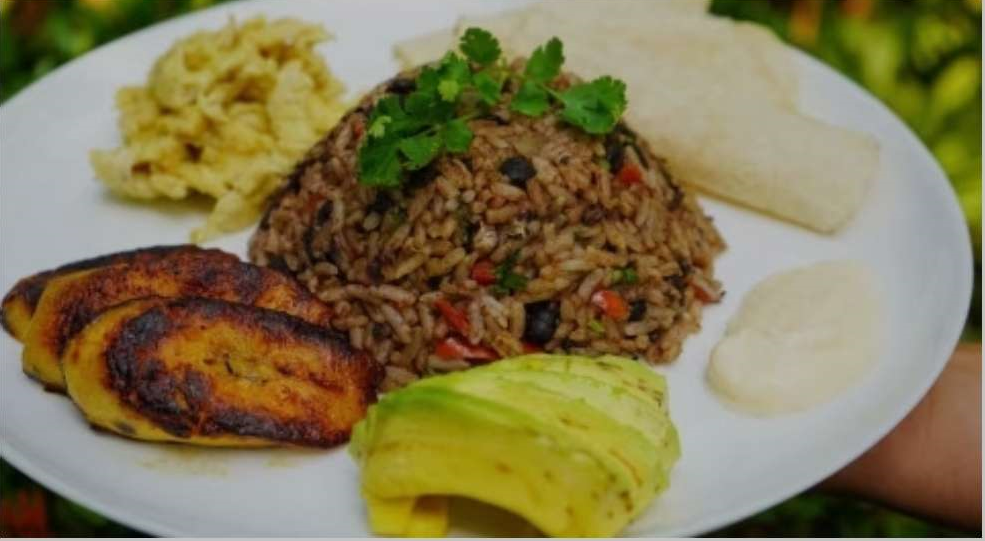
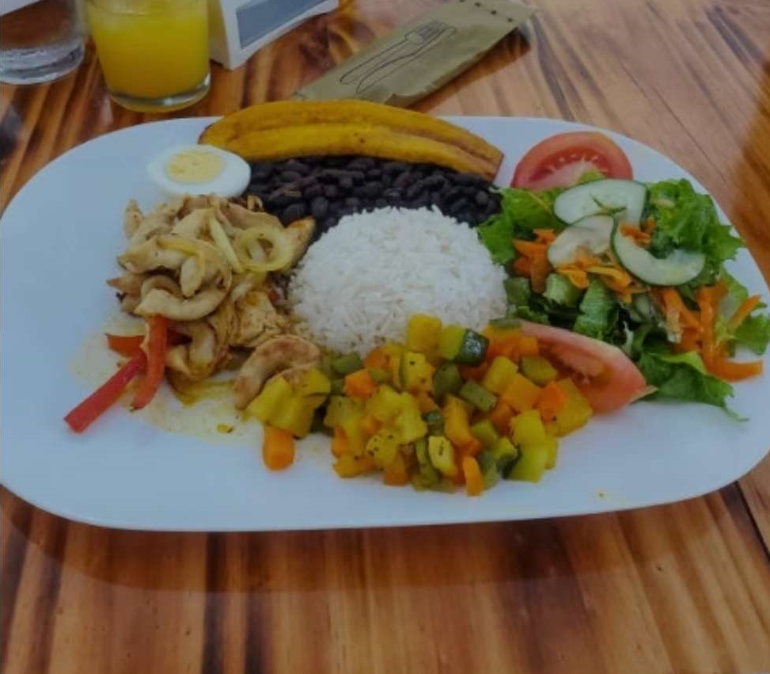
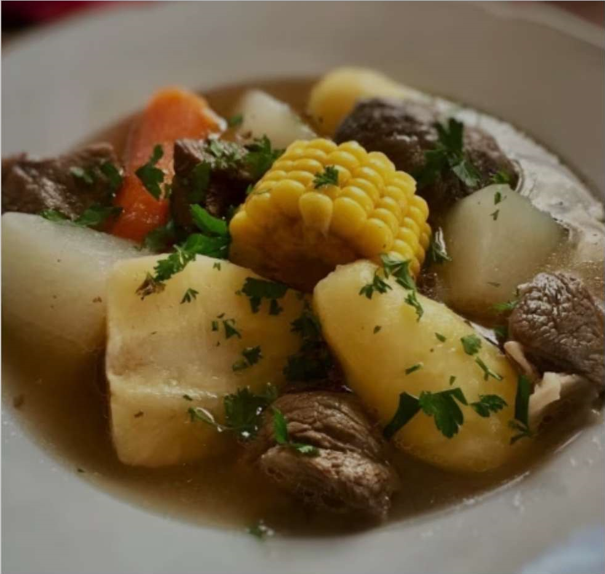

- Viajes Gastronomicos por el Mundo
Viajar es un verdadero festín para los sentidos. Cada aventura es una oportunidad única para descubrir la diversidad culinaria de nuestro planeta.
Desde saborear los exquisitos platos locales en puestos callejeros hasta deleitarse con las creaciones de chefs renombrados en restaurantes de renombre,
cada bocado nos transporta a una nueva cultura y nos conecta con las historias y tradiciones que dan forma a la comida del mundo.
¡Acompáñame en un viaje culinario que promete explorar el mundo a través del paladar!

Datos Generales
Costa Rica se destaca no solo por su impresionante belleza natural, sino también como un destino culinario que vale la pena explorar. La cocina costarricense se distingue por su combinación de sabores genuinos, ingredientes frescos y platos tradicionales que reflejan la rica herencia cultural del país.
Cuando se habla de la gastronomía típica de Costa Rica, tres platos sobresalen en particular: el Gallo Pinto, el Casado y la Olla de Carne. Estos platos se consideran auténticos tesoros culinarios que encapsulan la identidad gastronómica de la nación.
Gallo PintoConsiste en una mezcla de arroz y frijoles negros, sazonados con cebolla, chile dulce y culantro, a menudo se sirve con natilla, huevos fritos, queso blanco y plátanos fritos. El Gallo Pinto es la comida típica de Costa Rica con una explosión de sabores y texturas que te transportará a la esencia misma de la cocina de la región.

|
CasadoTradicionalmente, incluye arroz, frijoles, plátano maduro frito, carne (como pollo, cerdo o res), ensalada y tortillas. La combinación de sabores en este plato es increíblemente deliciosa y satisfactoria, el Casado es una opción perfecta de comida típica de Costa Rica si deseas probar diferentes elementos de esta cocina en un solo plato

|
Olla de CarneLa Olla de Carne es una sopa reconfortante y sustanciosa que se prepara con una variedad de vegetales, carne de res, yuca, plátano verde, ayote y chayote. Es un plato perfecto para aquellos días más frescos o cuando buscas algo caliente y nutritivo. La Olla de Carne es una muestra de la comida casera costarricense, llena de sabor y amor.

|